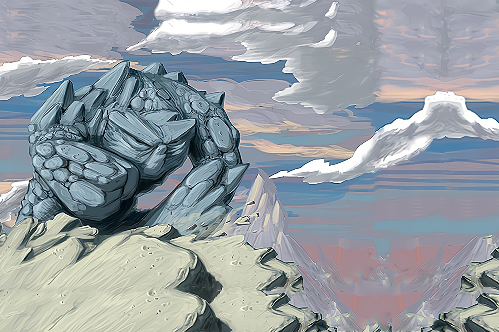

Stone's Unyielding Defiance
Some things refuse to break.
Underneath the soil and sand of the island lies rock, layer upon layer built up over the ages. Some stones weather quickly once exposed to the elements, while others are sterner and harder. Stone's Unyielding Defiance is a Spirit of that stone which resists being shattered, moved, or shaped to the will of another.
It is capable of tremendous feats of resilience and obstinacy, particularly when confronted head-on in a belligerent fashion. It's not unfriendly to other Spirits or the Dahan, but it works with them on its own terms.
SETUP:
Put 2 {presence} on your starting board: 1 in the lowest-numbered Mountain without {dahan}, 1 in an adjacent land that has {blight} (if possible) or is Sands (if not).
Play Style:
Most of its Special Rules and Innates require being where the Invaders are - particularly in the worst, most-overrun lands, so it can mitigate incoming {blight} and (eventually) Destroy the Invaders with their own Ravages.
Does best with the patience to build up a position over time, and the temperance to hold some Energy in reserve so it can take advantage of Hold the Island Fast With a Bulwark of Will.
COMPLEXITY
Moderate
|
Summary of Powers
|
|
|
|
|
|
|
OFFENSE
|
CONTROL
|
FEAR
|
DEFENSE
|
UTILITY
|